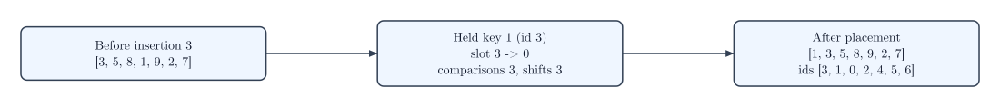
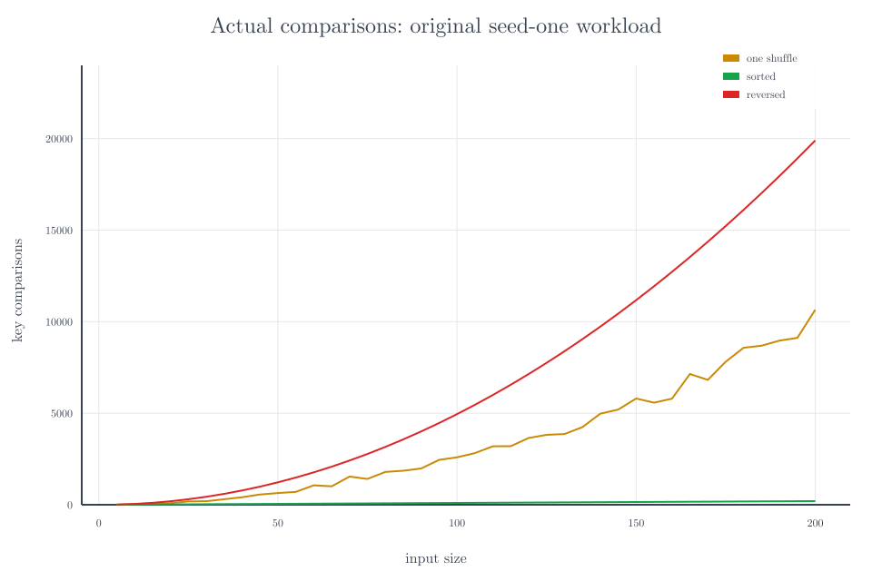

Insertion Sort: Actual Shifts, Stable Identities and Existing Order
Abstract
Put integer records into nondecreasing order while preserving the order of equal keys. Insertion sort grows a sorted prefix by shifting only predecessors larger than the held key. We start with three values, preserve the original seven-value trace and shuffled experiment, and derive exact comparison and shift identities. All observations come from the library's executing loop. The working vector is sorted in place, but the public by-value call copies lvalue input; neither low comparison counts nor this experiment establishes a universal runtime advantage.
Start with one insertion
For [3,1,2], the first insertion holds key one, shifts three right and places one at position zero. Its one key comparison succeeds; reaching the left boundary ends the loop without an extra false key comparison. The next insertion shifts three, then compares one with two and stops. These are actual boundaries, not results reconstructed by sorting each input prefix again.
#include <dm/dm.hpp>
int main() {
std::filesystem::create_directories("build");
const auto t = dm::algorithms::insertion_sort_trace({3, 1, 2});
std::print("| insertion | key | destination | comparisons | shifts | actual values |\n| ---: | ---: | " "---: | ---: | ---: | --- |\n");
for (const auto &x : t.steps)
std::print("| {} | {} | {} | {} | {} | {} |\n", x.index, x.key,
x.destination, x.comparisons, x.shifts, x.values);
std::print("Final values {}, identities {}, comparisons {}, shifts {}, placements {}.\n",
t.run.values, t.run.identities, t.run.work.comparisons,
t.run.work.shifts, t.run.work.placements);
dm::algorithms::insertion_sort_step_diagram(t).save_svg(
"build/insertion_tiny.svg");
}| insertion | key | destination | comparisons | shifts | actual values |
|---|---|---|---|---|---|
| 1 | 1 | 0 | 1 | 1 | [1, 3, 2] |
| 2 | 2 | 1 | 2 | 1 | [1, 2, 3] |
Final values [1, 2, 3], identities [1, 2, 0], comparisons 3, shifts 2, placements 2.
Derive the prefix invariant and stability
Before inserting position i, positions [0,i) are the stable sorted order of the first i original records; later positions are untouched. Holding a[i] opens one slot. Every predecessor strictly larger than the key moves right, preserving its order relative to the other shifted records. The first predecessor no larger than the key ends the scan, and key placement produces the stable sorted prefix [0,i+1). Equality stops shifting, so a later equal record never crosses an earlier one. Induction proves a stable sorted permutation after the last insertion.
Original identities travel with the actual assignments in the observed call. They are observations of the integer algorithm, not a separate generic payload sorting API. The result's original indices make otherwise invisible equal-key order checkable.
Exact work is controlled by inversions
A strict inversion is a pair j<i with a[j]>a[i]. On insertion i, exactly those larger earlier values shift right. Thus the total number of shifts is exactly the original inversion count I. Each insertion also writes the held key once, even when its destination is unchanged. For n>0 there are n−1 placements.
Let M count strict new minima after the first input: an a[i] smaller than every preceding value. Such an insertion reaches the left boundary and has no final false key test; every other insertion has one. Therefore, for n>0,
Empty input has S=P=C=0. Already sorted input, including all equal values, has I=M=0 and C=n−1. A strictly reversed distinct input has I=n(n−1)/2 and M=n−1, so C=I. Index-bound checks, held-key reads, input copies, identity bookkeeping, allocation and observations are excluded from these selected counts. Logical value-array writes are S+P, not a byte-traffic or physical-storage endurance model.
The body runs in Θ(n+I), hence Θ(n) when I=O(n), with a quadratic worst case. The legacy by-value API additionally owns/copies its input/output, while its body uses constant auxiliary value storage. Observed identities add O(n); full snapshots add Θ(n²) values and corresponding observation time/storage.
Preserve the original seven values and every actual state
#include <dm/dm.hpp>
int main() {
std::filesystem::create_directories("build");
const auto t = dm::algorithms::insertion_sort_trace({5, 3, 8, 1, 9, 2, 7});
std::print("| actual insertion | actual values after placement | comparisons | shifts |\n| ---: | --- | " "---: | ---: |\n");
for (const auto &x : t.steps)
std::print("| {} | {} | {} | {} |\n", x.index, x.values, x.comparisons,
x.shifts);
std::print("Library result {}; actual comparisons {}, shifts {}, placements {}.\n",
t.run.values, t.run.work.comparisons, t.run.work.shifts,
t.run.work.placements);
dm::algorithms::insertion_sort_step_diagram(t, 2).save_svg(
"build/insertion_original.svg");
}| actual insertion | actual values after placement | comparisons | shifts |
|---|---|---|---|
| 1 | [3, 5, 8, 1, 9, 2, 7] | 1 | 1 |
| 2 | [3, 5, 8, 1, 9, 2, 7] | 1 | 0 |
| 3 | [1, 3, 5, 8, 9, 2, 7] | 3 | 3 |
| 4 | [1, 3, 5, 8, 9, 2, 7] | 1 | 0 |
| 5 | [1, 2, 3, 5, 8, 9, 7] | 5 | 4 |
| 6 | [1, 2, 3, 5, 7, 8, 9] | 3 | 2 |
Library result [1, 2, 3, 5, 7, 8, 9]; actual comparisons 14, shifts 10, placements 6.

Preserve the original evolving shuffle experiment
The next block preserves the original forty sizes 5,10,…,200, the single evolving std::mt19937 seed-one stream and each std::shuffle invocation. One shuffled input at each size is one observation, not an estimated average. The shuffle mapping is toolchain-specific; the native profile retains its actual inputs for checking. The sorted/reversed inputs are deterministic. On this toolchain the final shuffled count is 10652, not the old cached 10466; the extracted original count function and the shared kernel agree on every actual generated input. All three costs now come from the same executing library kernel rather than a copied instrumented implementation.
For a uniformly random permutation of distinct keys, each pair is inverted with probability one-half, so E[I]=n(n−1)/4. Position i is a strict new minimum with probability 1/(i+1), giving E[M]=Hₙ−1. Consequently,
That is a distributional identity, not a guarantee for the single seed-one permutation. No crossover against another sorting algorithm is measured here.
#include <dm/dm.hpp>
int main() {
std::filesystem::create_directories("build");
const auto rows = dm::algorithms::insertion_sort_example_profile();
std::vector<double> n, random, sorted, reversed;
std::print("| n | sorted comparisons | shuffled comparisons | reversed comparisons | shuffled shifts " "|\n| ---: | ---: | ---: | ---: | ---: |\n");
for (const auto &r : rows) {
std::print("| {} | {} | {} | {} | {} |\n", r.n, r.sorted.comparisons,
r.random.comparisons, r.reversed.comparisons, r.random.shifts);
n.push_back(r.n);
random.push_back(r.random.comparisons);
sorted.push_back(r.sorted.comparisons);
reversed.push_back(r.reversed.comparisons);
}
auto p = dm::graphics::RPlot::create();
p.line(n, random, "one shuffle", {202, 138, 4}, 2).line(n, sorted, "sorted",
{22, 163, 74}, 2).line(n, reversed, "reversed", {220, 38, 38}, 2).title("Actual comparisons: original seed-one workload").x_label("input size").y_label("key comparisons").y_limits(0, 24000).save_svg("build/insertion_profile.svg");
}| n | sorted comparisons | shuffled comparisons | reversed comparisons | shuffled shifts |
|---|---|---|---|---|
| 5 | 4 | 4 | 10 | 1 |
| 10 | 9 | 26 | 45 | 19 |
| 15 | 14 | 70 | 105 | 59 |
| 20 | 19 | 88 | 190 | 71 |
| 25 | 24 | 179 | 300 | 157 |
| 30 | 29 | 194 | 435 | 169 |
| 35 | 34 | 300 | 595 | 267 |
| 40 | 39 | 410 | 780 | 373 |
| 45 | 44 | 559 | 990 | 521 |
| 50 | 49 | 639 | 1225 | 591 |
| 55 | 54 | 703 | 1485 | 651 |
| 60 | 59 | 1061 | 1770 | 1009 |
| 65 | 64 | 1006 | 2080 | 945 |
| 70 | 69 | 1538 | 2415 | 1473 |
| 75 | 74 | 1410 | 2775 | 1339 |
| 80 | 79 | 1793 | 3160 | 1719 |
| 85 | 84 | 1858 | 3570 | 1777 |
| 90 | 89 | 1982 | 4005 | 1898 |
| 95 | 94 | 2452 | 4465 | 2363 |
| 100 | 99 | 2589 | 4950 | 2495 |
| 105 | 104 | 2822 | 5460 | 2719 |
| 110 | 109 | 3192 | 5995 | 3085 |
| 115 | 114 | 3200 | 6555 | 3090 |
| 120 | 119 | 3647 | 7140 | 3532 |
| 125 | 124 | 3819 | 7750 | 3700 |
| 130 | 129 | 3863 | 8385 | 3739 |
| 135 | 134 | 4241 | 9045 | 4111 |
| 140 | 139 | 4975 | 9730 | 4839 |
| 145 | 144 | 5199 | 10440 | 5059 |
| 150 | 149 | 5803 | 11175 | 5661 |
| 155 | 154 | 5576 | 11935 | 5425 |
| 160 | 159 | 5794 | 12720 | 5637 |
| 165 | 164 | 7140 | 13530 | 6984 |
| 170 | 169 | 6820 | 14365 | 6653 |
| 175 | 174 | 7812 | 15225 | 7643 |
| 180 | 179 | 8575 | 16110 | 8402 |
| 185 | 184 | 8687 | 17020 | 8507 |
| 190 | 189 | 8964 | 17955 | 8781 |
| 195 | 194 | 9115 | 18915 | 8931 |
| 200 | 199 | 10652 | 19900 | 10456 |

Equal keys, a displaced minimum and complete budgets
For [2,1,2], the two keys equal to two keep their original identities zero then two. A single displaced minimum can also create many inversions despite just one out-of-place input position: [1,2,3,4,0] shifts four predecessors. Calling data nearly sorted is meaningful only with a stated disorder measure, such as I.
New run/trace calls admit the complete element count before copying. A full trace has n−1 snapshots for n≥1, each reserving 1+2n logical entries for its record, values and identities. The complete product is checked for overflow and against the optional history cap before any copy or sorting. Both optional caps default to one million and zero disables either; untraced calls ignore the history cap. Excluded are original/working/final arrays, scalar metadata, vector capacity and byte/peak RAM. Errors return no partial history. Legacy value-only calls keep optional caps disabled. Empty and singleton inputs need no insertion records.
#include <dm/dm.hpp>
int main() {
std::filesystem::create_directories("build");
const auto ties = dm::algorithms::insertion_sort_trace({2, 1, 2});
const auto displaced =
dm::algorithms::insertion_sort_trace({1, 2, 3, 4, 0});
std::print("| control | observed |\n| --- | --- |\n| tied sorted values | {} |\n| tied original " "identities | {} |\n| displaced-minimum comparisons | {} |\n| displaced-minimum shifts | {} " "|\n",
ties.run.values, ties.run.identities,
displaced.run.work.comparisons, displaced.run.work.shifts);
(void) dm::algorithms::insertion_sort_trace({3, 1, 2}, {3, 14});
try {
(void) dm::algorithms::insertion_sort_trace({3, 1, 2}, {3, 13});
throw std::runtime_error("history cap accepted");
} catch (const std::length_error &) {
std::print("Complete 14-entry trace admitted; cap 13 rejected.\n");
}
dm::algorithms::insertion_sort_step_diagram(ties, 1).save_svg(
"build/insertion_controls.svg");
}| control | observed |
|---|---|
| tied sorted values | [1, 2, 2] |
| tied original identities | [1, 0, 2] |
| displaced-minimum comparisons | 7 |
| displaced-minimum shifts | 4 |
Complete 14-entry trace admitted; cap 13 rejected.
Validation and reference
Native sanitizer checks enumerate all 29524 ternary inputs through length nine and all 40320 permutations of eight distinct values. Independent stable sorting of original indices verifies final tie order and every prefix/suffix state; quadratic pair enumeration verifies inversion and strict-new-minimum counts. Original states, integer extremes, sorted/reversed formulas, complete caps and ownership are checked separately. The existing comparison-sort consumers pass.
The reference is NIST's insertion sort entry. This implementation uses strict predecessor shifts and final placement rather than an adjacent-swap variant. The examples establish stable ordering and exact selected work, without claiming universal speed superiority for small arrays or treating caller-visible input copies as constant storage.
Independent Python prefix-order and pair-count checks verify 1350 inputs, 6784 actual insertion states and all 40 original workload rows. The extracted original comparison-count function agrees on every retained shuffled input. Fresh coverage checks pass 42 definitions, 11 compiled public examples and four clangd hovers.